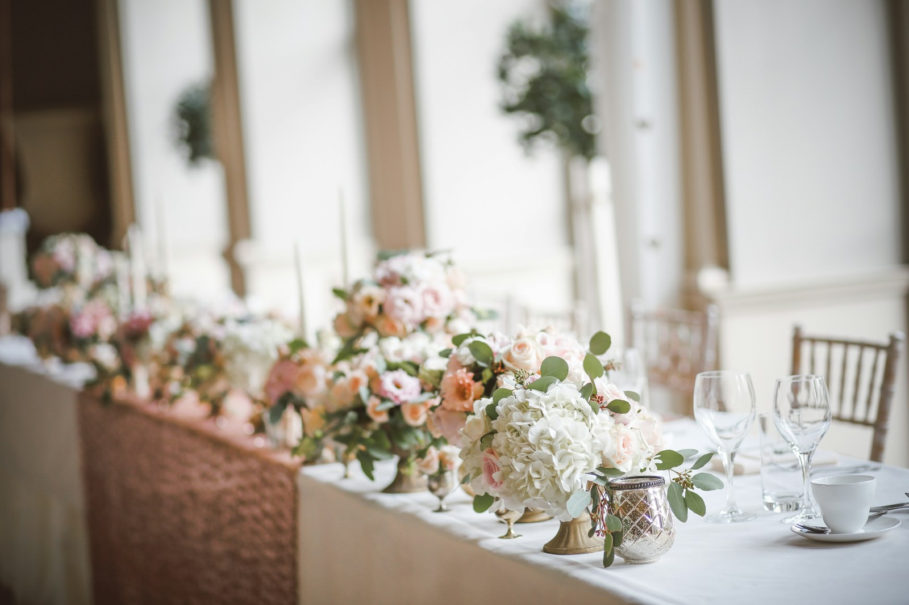
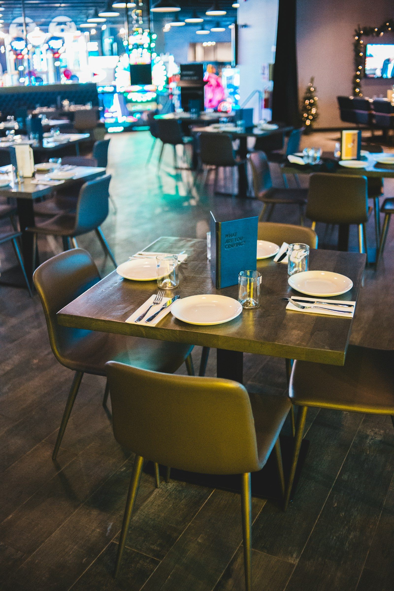
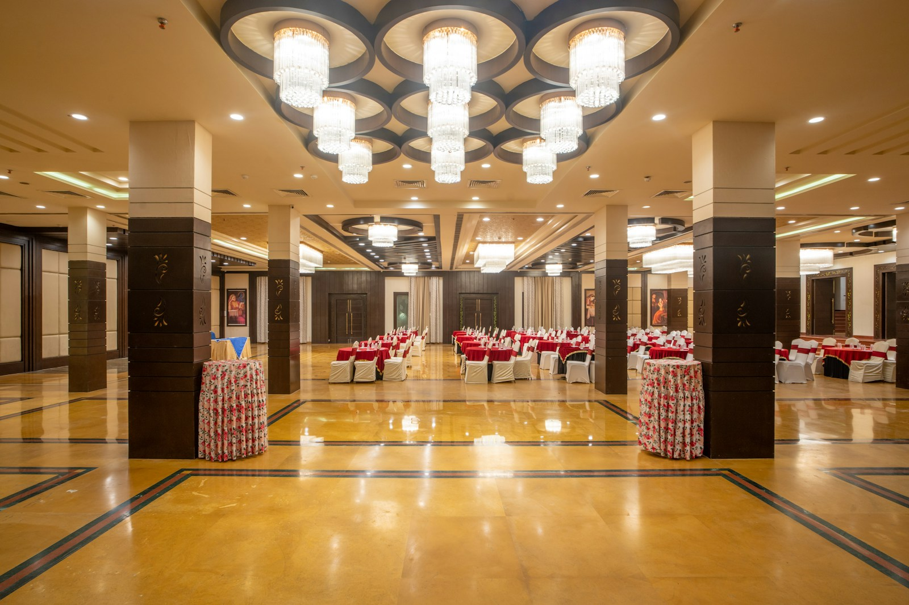
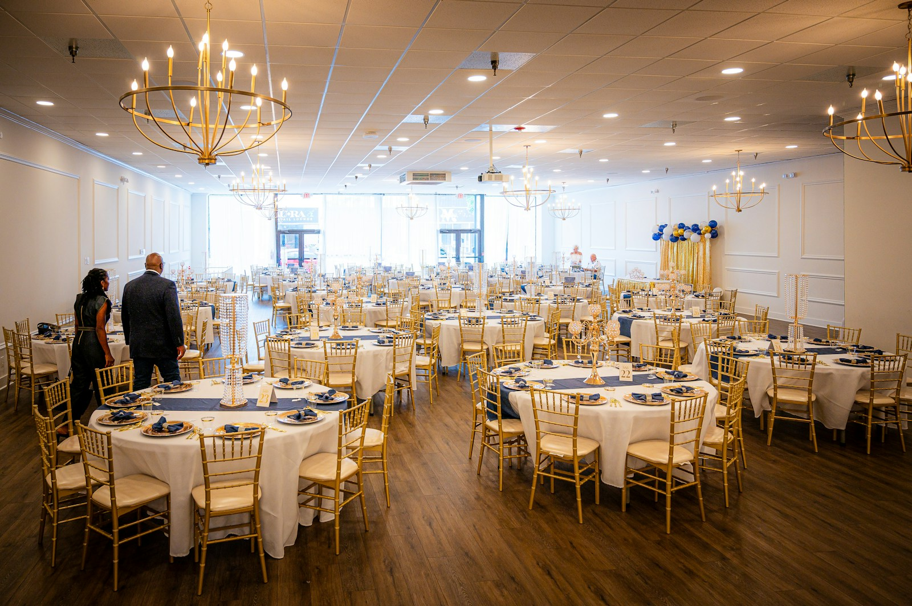

Feiern im Haus
Geburtstage, Hochzeiten, Familien-, Firmen- und Weihnachtsfeiern in persönlicher Atmosphäre bei uns vor Ort.

Große Feste. Persönlich geplant.
Hochzeit, Geburtstag, Familienfest, Firmen- oder Weihnachtsfeier: Wir gestalten den kulinarischen Rahmen, damit Sie und Ihre Gäste den Anlass genießen können.
Ihre Feier in guten Händen
Feiern Sie direkt bei uns in der Lindenhöhe oder buchen Sie unser Catering für Ihre Wunschlocation. Gemeinsam stimmen wir Speisen, Ablauf und besondere Wünsche ab.
Geburtstage, Hochzeiten, Familien-, Firmen- und Weihnachtsfeiern in persönlicher Atmosphäre bei uns vor Ort.
Unsere Küche kommt zu Ihnen – passend zu Ihrer Veranstaltung und gemeinsam geplant.
Wir besprechen Ihre Vorstellungen direkt und finden eine Lösung, die wirklich zu Ihrem Fest passt.
Mit uns feiern Sie – aber richtig
Wir kommen gerne zu Ihnen, wenn Sie Ihre Gäste zu Hause, im Unternehmen oder einer besonderen Location bewirten wollen. Auch hier kümmern wir uns um jedes Detail und den besonderen Genuss – Feiern, die in Erinnerung bleiben. Liebevoll zubereitet, ob kalt, ob warm, als komplettes Menü mit Vorspeisen, Desserts und Getränken. Auf Wunsch auch mit Service.
Wir durften bereits an den schönsten Veranstaltungsorten der Region wie etwa der einer historischen Eventlocation unsere Gäste mit Fingerfood und Häppchen verwöhnen. Als eine von wenigen Firmen dürfen wir Ihnen auch in der einer festlichen Orangerie dienen. Egal ob deutsche, italienische oder fränkische Küche. Wir haben von allem etwas anzubieten. Kommen Sie einfach auf uns zu!

Rundum sorglos mit uns feiern
Von der ersten Idee bis zum Fest beraten wir Sie persönlich und erstellen ein maßgeschneidertes Angebot, das zu Ihren Wünschen und Ihrem Anlass passt.
Feiern im großen Stil in unserem Restaurant
Ob Geburtstag, Hochzeit, Konfirmation oder Kommunion: In unseren gemütlichen Stuben und großzügigen Sälen findet Ihre Feier den passenden Rahmen. Dabei begleiten wir Sie persönlich – von der ersten Idee bis zum gelungenen Fest.
Für den Genuss sorgen modern interpretierte fränkische Küche, saisonale Gerichte und liebevoll abgestimmte Menüs. Auf Wunsch kümmern wir uns selbstverständlich auch um eine individuelle Tischdekoration.

38 m² · ca. 30 Plätze

32 m² · ca. 32 Plätze

170 m² · bis zu 150 Personen

64 m² · bis zu 60 Personen
38 m² · bis zu 28 Personen
Von der Idee bis zum Fest
Rufen Sie uns an und erzählen Sie uns, was Sie vorhaben. Wir beraten Sie persönlich und unverbindlich.